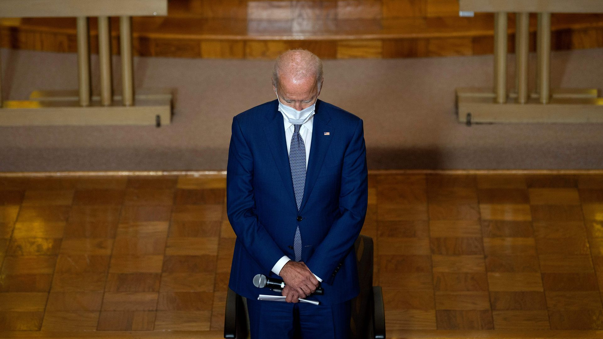
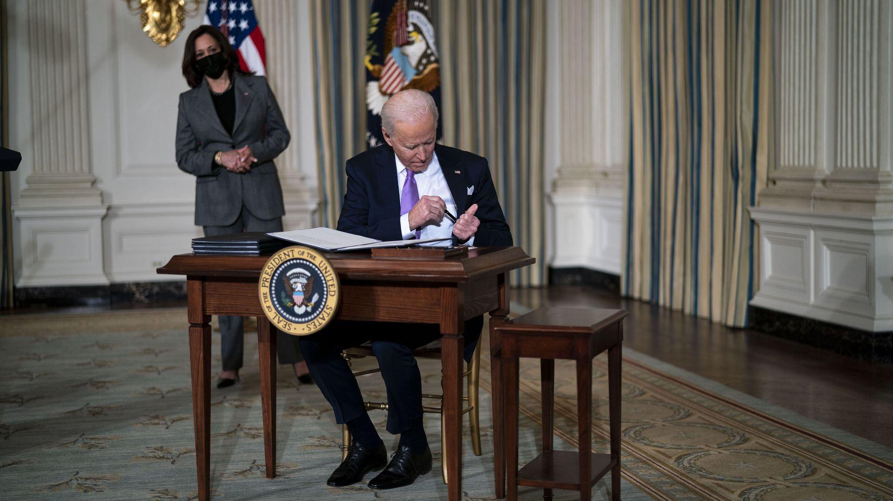
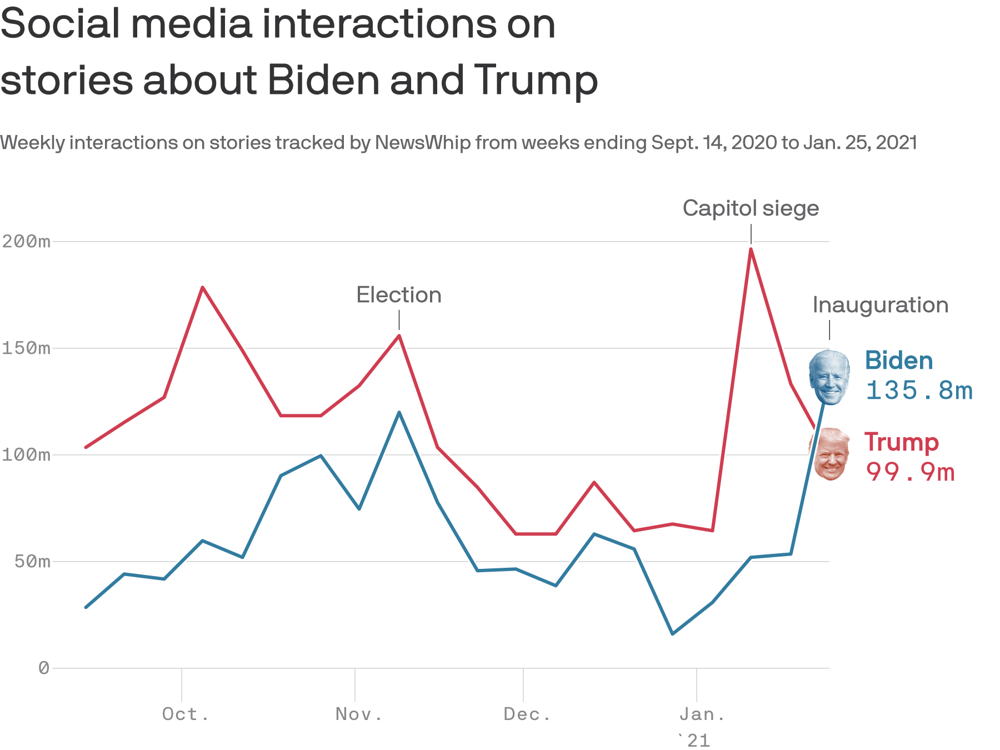
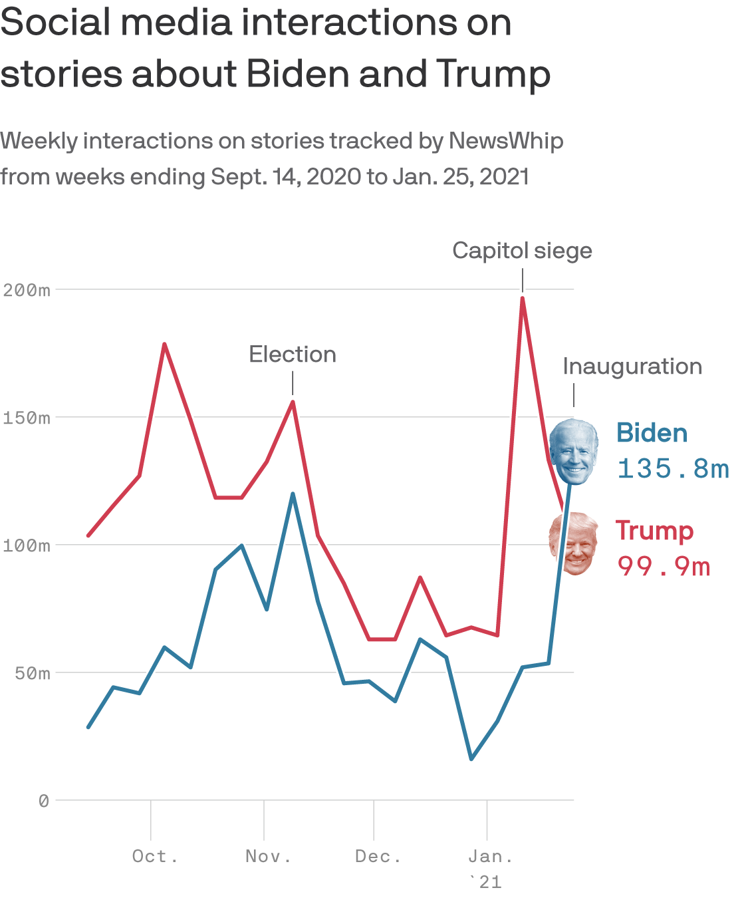

Biden's Day 1 challenges: The immigration reset
President Joe Biden on Tuesday signed executive orders on housing and ending the Justice Department's use of private prisons as part of what the White House is calling his 'racial equity agenda.'
The big picture: Biden needs the support of Congress to push through police reform or new voting rights legislation.The executive orders serve as his down payment to immediately address systemic racism while he focuses on the pandemic.
Posted On: 2021-01-26T00:00:00
Posted By: Russell Contreras
President Biden is making a down payment on racial equity in a series of executive orders dealing with everything from private prisons to housing discrimination, treatment of Asian Americans and relations with indigenous tribes.
The big picture: Police reform and voting rights legislation will take time to pass in Congress.But with the stroke of his pen, one week into the job, Biden is taking steps within his power as he seeks to change the tone on racial justice from the Trump administration.
Posted On: 2021-01-26T00:00:00
Posted By: Russell Contreras
Donald Trump was eclipsed in media attention last week by President Biden for the first time since Trump took office, according to viewership data on the internet, on social media and on cable news.
Why it matters: After Trump crowded out nearly every other news figure and topic for five years, momentum of the new administration took hold last week and the former president retreated, partly by choice and partly by being forced off the big platforms.
Posted On: 2021-01-26T00:00:00
Posted By: Neal Rothschild




Content Date: 2021-01-26
Download Date: 2021-05-15
Document ID: L0C04CCNR